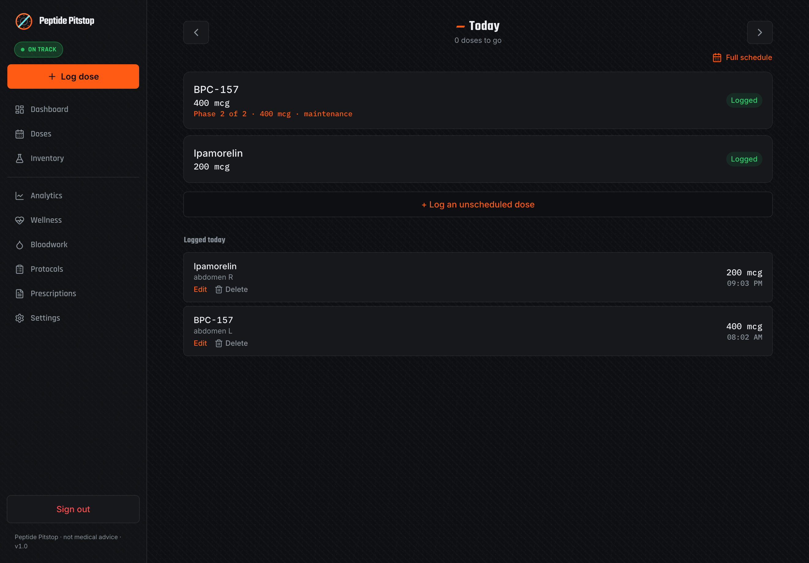
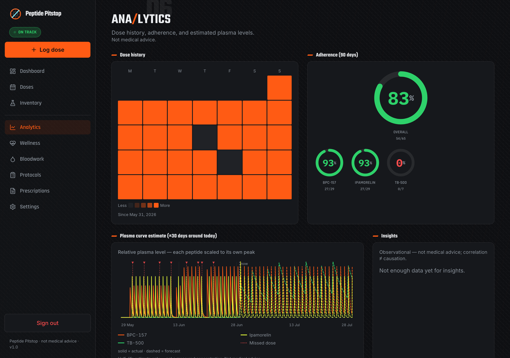
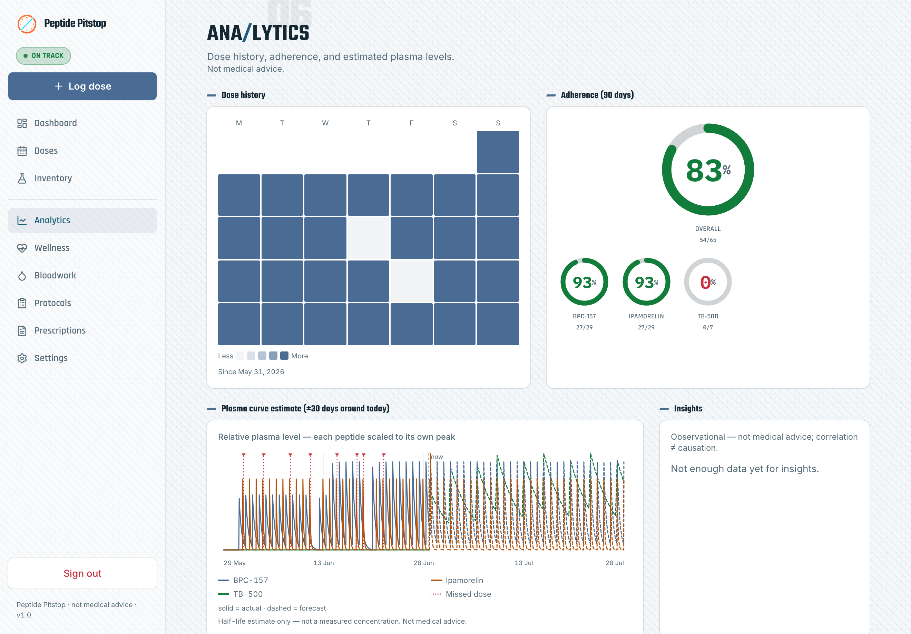
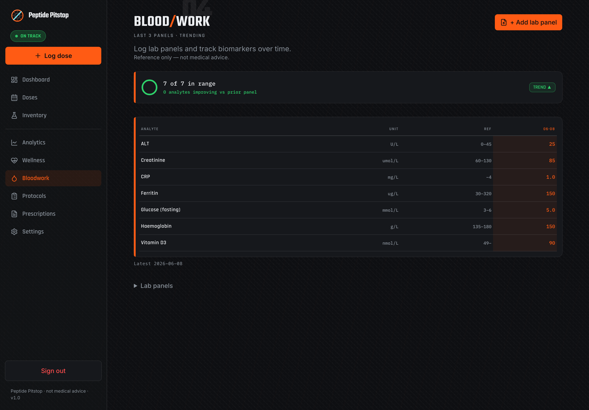
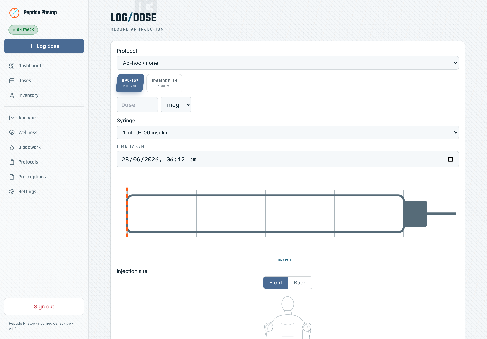
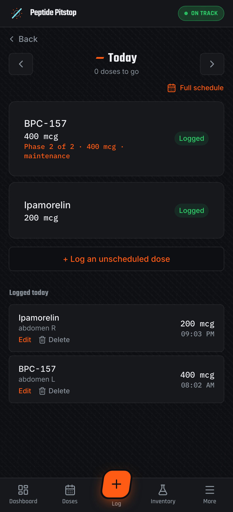
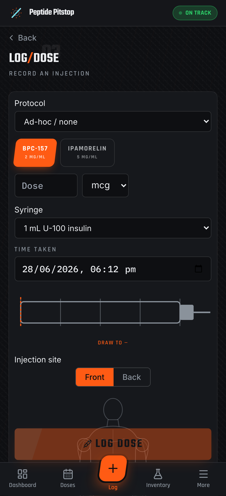
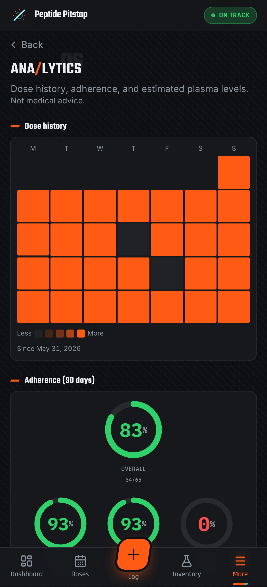
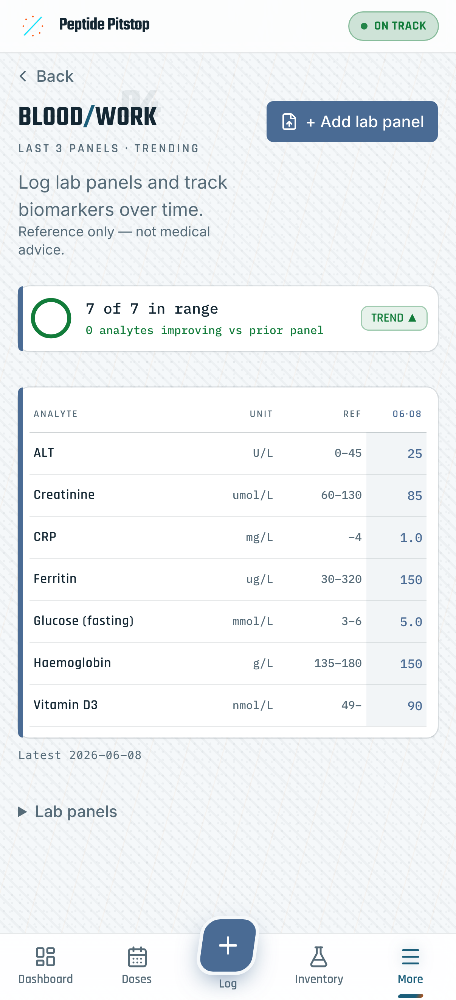

The free, open-source, self-hosted peptide & GLP-1 tracker. Reconstitution and draw-volume math, dose logging, titration stacks, bloodwork, and plasma-level modelling — one Docker container, installable as an offline PWA, living entirely on infrastructure you own.

Own your own data
A private, self-hosted, encrypted peptide tracker: no cloud account, no telemetry, no third party between you and your health record. You host it, back it up, export it, and delete it — on your terms.
A single Docker container on your own server. No SaaS, no managed backend that can change terms or get breached.
Identifying free-text and lab values are encrypted with AES-256-GCM before they ever touch disk.
No analytics SDKs, no telemetry. Fonts self-hosted. Analytics computed locally from your own database.
One-click CSV + PDF export for doses, labs, journal, and wearables. Portable by design — never locked in.
What it does
Everything a self-hosted peptide tracker needs — and the dosing engine, the highest-stakes part, is exhaustively tested (600+ tests, pure decimal math, no floating-point drift).
Concentration, draw volume, and syringe markings computed with decimal math. Handles reconstituted and premixed vials.
Multi-peptide schedules with ramping/titration steps and a live calc-chart showing exactly how each phase is computed.
Lab panels over time, in-range summaries, and a comparison matrix backed by a curated biomarker library.
Adherence, a dose-history heatmap, and single-compartment plasma-level estimates from your history and each peptide's half-life.
Optional Home Assistant dose reminders and Garmin wellness sync — your webhook, your credentials, your schedule.
Add to your home screen; works offline for the things that matter on the go. Phone-first, with a dark and a light theme.
A look inside
A motorsport-inspired “pit-wall” design — carbon and race-orange — with a clean light theme. All screenshots use demo data only.




On your phone




Deployment is a single container. Bring your own database file, point a tunnel at it, and you're running. Full setup — Docker, env vars, demo seed — is in the README.
Common questions
Straight answers for self-hosters comparing a free, open-source, Docker-deployable peptide & GLP-1 tracker.
Yes — Peptide Pitstop is a self-hosted peptide & GLP-1 tracker that runs entirely on your own hardware as a single Docker container. No cloud account, no managed backend: you host it, back it up, and control it yourself.
100% free and open source under AGPL-3.0. No subscriptions, accounts, or paywalls — read, audit, and fork the full source on GitHub.
Deployment is a single Docker container. Pull the image, point it at a database file, and open it in any browser — full Docker, env-var, and demo-seed steps are in the README. Installs as a PWA for offline use too.
Your data never leaves your server. Identifying free-text and lab values are encrypted with AES-256-GCM before they touch disk, there is no telemetry, and fonts are self-hosted — nothing reaches a third party.
Yes — the reconstitution engine computes concentration, draw volume, and syringe markings with exact decimal math (no floating-point drift), for both reconstituted and premixed vials.
Reconstitution and draw-volume math, dose logs, titration and multi-peptide stacks, bloodwork and biomarker trends, single-compartment plasma-level modelling, and an adherence heatmap. Everything exports to CSV or PDF.